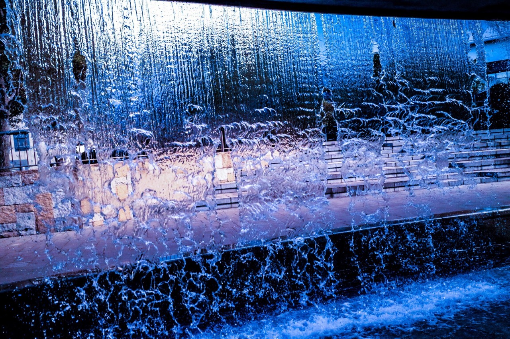

| 2017/02 09 Thu | 斎藤ちはる 3。 |
ちはるーむへようこそ
今日17thの、個別握手会の
日程と部数が発表されましたね！
今回わたしは3部制になりましたヽ(；；)丿
とっても嬉しい...！！
こうして部数が増えているのは
皆さんのおかげです。
本当に感謝しています。。
今お会いできている皆さんには
これからもずっと会いたいと思ってもらえるように。
まだお会いしたことない皆さんには
一度でも会ってみたいと思ってもらえるように。
頑張っていきたいと思います\( ˆ ˆ )/
17thはどの会場も全て1〜3部です。
今までは4部や5部、
早くても3部からだったので
初めての1、2部だ〜◎
時間が遅い夜は行けないよ〜って方には
今回やっとお会いできるチャンスができました！
あ、ずっと言ってみたかった言葉があるの！
「寝坊すんなよ♡」
------------------------------------------♡
#chihashot
今日も自分のミラーレスカメラで
好きなものを好きなように撮った写真を紹介する
#chihashotの日がやってきました
今回もシャッタースピードの違う写真を。
夢の国のメリーゴーランドを
シャッタースピードを遅くして撮った写真。
くるくる規則的に回るメリーゴーランドは
写真撮るのに最適！
シャッタースピードを遅くしすぎないことで
どのように動いてるかを
分かりやすくしてみました☺︎

上から落ちる滝。
実はこんな風に水が落ちてたんだ、
と新しい発見ができました
この写真は青や黒をベースにして
水の冷たさと水の静けさを
イメージしてみました！
滝の奥の風景が水に映っていたり
水の隙間から見えるのが
わたし的にお気に入りです。
最近はなかなか時間がなくて
アート展や写真展に行けていない...
悲しいかな。
でも忙しくさせていただいてるのは
嬉しいかな。
今、どんな写真展や展示会、博覧会をやっているんだろう！
知ってる方いらっしゃったら是非
教えていただきたい( ´ｰ`)
---------------------------------------♡
♬ ChihaMusic
「イエス」Acid Black Cherryさん
セクシーで優しい声が
本当に素敵だな〜と、
この曲を聞いてよく思う。
幸せな2人の曲なのかと思いきや
実はとても悲しい歌なんじゃないかなと
私は思ってる。
"たった一言 簡単な言葉なのに
なぜもっと早く言ってあげなかったのかな？"
言葉にすること、伝えることって
凄く難しいし恥ずかしいけど
言わなきゃ伝わらない事って
沢山あると思う。
でも言えないのも人間なんだよね。
後悔はしたくない。
すっ。ぴん。
受験シーズンですが
明日受験の皆さんも多いのかな...？？
今までやってきた自分の力を信じて、
自信を持って頑張ってきてください！
応援しています☺︎
おやすみ
斎藤ちはる